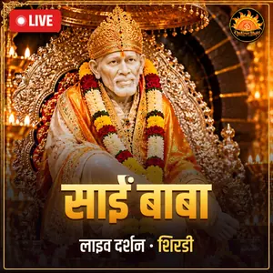

Today's live darshan
Separate Shirdi Sai Baba live darshan page

Source: the temple's official YouTube channel “Shree Saibaba Sansthan Trust”; the Sansthan's official website sai.org.in shows this channel's videos. All rights to the video belong to them. Live darshan of all temples
Daily aarti and darshan timings
| What | Time (approx.) |
|---|---|
| Temple opens | About 4:30 – 4:45 am |
| Kakad aarti | About 5:15 am |
| Darshan begins | After Kakad aarti |
| Madhyan aarti | 12:00 pm |
| Dhoop aarti | At sunset (about 6 pm in winter) |
| Shej aarti | About 10:00 at night |
| Temple closes | After Shej aarti |
The Dhoop aarti time changes with sunset. Different websites give the Shej aarti time as 10 and 10:30 pm; the temple is open every day. Timings change on Guru Purnima, Ram Navami and Vijayadashami (Baba's punyatithi); check the latest timings on the Sansthan website.
Paid darshan and aarti pass fees
| Service | Fee (approx.) | Booking |
|---|---|---|
| General darshan | Free | No booking needed |
| Paid (quick) darshan | ₹200 per person | online.sai.org.in or the Sansthan counter in Shirdi |
| Kakad aarti pass | ₹600 per person | online.sai.org.in |
| Madhyan, Dhoop or Shej aarti pass | ₹400 per person | online.sai.org.in |
A small service charge is added for online booking. Passes cannot be used by anyone else and are usually not refundable. Every person should carry a photo ID (Aadhaar etc.); the name must match the booking. Aarti pass prices keep changing; check on online.sai.org.in before paying.
Important things before you go
- Mobile and camera: mobiles, cameras and large bags are not allowed inside the Samadhi Mandir; deposit them in a locker or cloak room.
- Leave footwear outside at the shoe stand.
- Wear modest, traditional clothes.
- The Sansthan's Sai Prasadalaya serves devotees a simple meal as prasad; laddu prasad is also available in the temple complex.
- Every Thursday night, Baba's palkhi goes from the Samadhi Mandir to the Chavadi; it is more crowded on that day.
- Beware of fake websites: many look-alike websites and WhatsApp numbers sell ‘VIP darshan’ or tickets in this temple's name. Book only through the official website or app given below, and never pay an agent in advance.
Other places for darshan in Shirdi
- Dwarkamai: the mosque where Baba lived; its dhuni still burns and udi (sacred ash) is given here.
- Chavadi: where Baba slept on alternate nights; the Thursday palkhi comes here.
- Gurusthan: the neem tree under which Baba was first seen.
- Lendi Baug: the garden Baba planted, where the Nandadeep burns.
- Many people also visit Shani Shingnapur nearby (about 70 km) on the same trip.
Where to stay
The Shri Saibaba Sansthan Trust runs several bhakta niwas (guest houses): Sai Ashram, Dwarawati, Sai Prasad, Saidham and the new Bhakta Niwas. They are about half a km to 2 km from the temple and are inexpensive; rooms can be booked on online.sai.org.in about one to two months ahead. A small refundable deposit is taken at check-in.
How to reach
- Rail: Sainagar Shirdi station is about 3–4 km from the temple; a Vande Bharat also runs from Mumbai. Kopargaon station is about 17 km away.
- Air: Shirdi airport is about 14–17 km away.
- Road: about 80–90 km from Nashik, about 240–270 km from Mumbai (faster via the Samruddhi Expressway) and about 190–200 km from Pune. The bus stand is near the temple.
When is it less crowded
Thursday, Sunday, holidays, New Year, Guru Purnima, Ram Navami and Vijayadashami are very crowded. On ordinary days, darshan is quick even in the general queue after the noon aarti or before the evening Dhoop aarti.
Information checked: November 18, 2026. Official website: online.sai.org.in. Temple timings, fees and rules keep changing; always check the official website before travelling or paying.